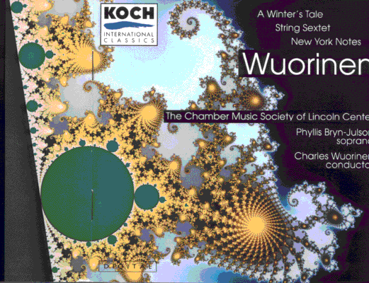

| In the text accompanying Charles Wuorinen's
A Winter's Tale, Peter Paul Nash
describes Wuorinen's transformation in the mid 70s to early 80s. While some American
composers abandoned dissonance for romanticism, Wourinen's |
| "transformation was more
subtle and fundamental,originating in his discovery of the fractal geometry and chaos
theory pioneered during the 1960s by Benoit Mandelbrot..." |
|
| Fractal geometry |
| "could
be the most radical way of reconsidering the world since the great modernist and
reductive theories of the early 20th century; since it is so anti-reductive,
and admits the irregularities, proportionalities, hierarchies and sheer messiness of
'real life.' The implications for music are obvious. Indeed a succession of
'proto-fractal' composers can be traced back into the past: Sibelius, Beethoven,
J. S. Bach, and even further back." |
|
| Here is the CD jacket for A Winter's Tale. |
|  |
| In his essay "Music and Fractals," Wuorinen describes some of the fractal
characteristics of music, including this |
| "... in traditional western diatonic-tonal music, there is a strong
tendency for similar structures to appear on different time-scales. Thus the
same harmonic progression may determine the course of a whole movement, of a
sizable section of it, or of a single short phrase. Traditional terminology
shows, by its indifference to scale, how deeply imbedded self-affine structures
in compositions are: "C major" can refer to a single sonority, the key of a
phrase, a movement-section, a whole movement, or the key of an entire work. And
in post-tonal music similar structures on differing time-scales are certainly present." |
|
| Wuorinen continues, describing a method of fractal composition he developed. |
"The 'nesting method' typically begins with an ordered set of pitch-classes, whose
intervals are chosen not merely for their appropriateness in the design of satisfactory
harmony, but also so that, when these same intervals are temporally interrupted, they can
conduce to the development of meaningful large-scale structure. The total interval span of
the ordered set is flung over the duration of the whole work or movement. The set is
defined by a succession of intervals of varying sizes, and these intervals may be used to
divide a large span of time into sections whose lengths are directly proportional to the
interval-sizes of the original succession. Within each of these large sections, then, a similar
process is effected. Usually, three levels of such divisions are sufficient to produce a set
of nested self-affine temporal intervals which can then be used to define the structure
of the composition, ... .
"It should be clear that what I have sketched above is not really 'composing' in the sense
we might historically apply to the familiar figures of the western tradition. It is rather
the preparation for the composing, ... . Having made such preparation, then, I have found
it possible to compose with a kind of intuitive freedom which still assures macrostructural
coherence. Those who try for this coherence without structural underpinnings usually fail." |
|